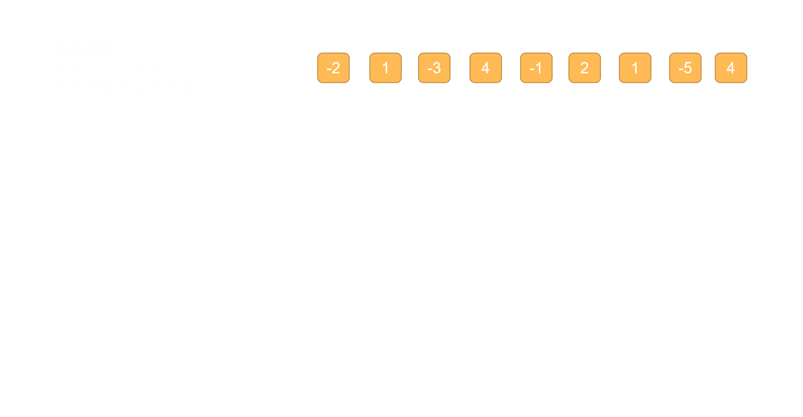

给定一个整数数组 nums ，找到一个具有最大和的连续子数组（子数组最少包含一个元素），返回其最大和。
输入：[-2,1,-3,4,-1,2,1,-5,4] 输出: 6
解释: 连续子数组 [4,-1,2,1] 的和最大，为 6。
给定一个整数数组 nums ，找到一个具有最大和的连续子数组（子数组最少包含一个元素），返回其最大和。
输入：[-2,1,-3,4,-1,2,1,-5,4] 输出: 6
解释: 连续子数组 [4,-1,2,1] 的和最大，为 6。
算法说明
将问题演变为遍历出每个节点为结束点的所有子序列 js 代码演示